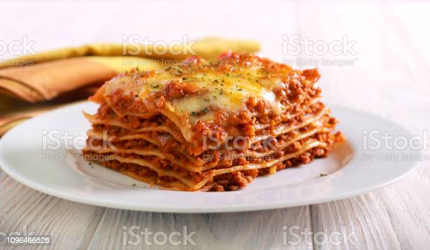

Lasagna

Information
Lasagna is a tasty dish that would be great as leftovers. This recipe will make 12 servings.
Ingredients
Meat Sauce:
- 1 1/2 pounds lean ground beef
- 1 pound bulk Italian sausage
- 1 teaspoon salt
- 1/2 teaspoon Italian seasoning
- 1/4 teaspoon red pepper flakes
- 6 cups prepared marinara sauce
- 1/4 cup water or as needed
Pasta
- 1 (16 ounce) package lasagna noodles
Ricotta Filling:
- 2 large eggs
- 2 pounds whole-milk ricotta cheese
- 8 ounces fresh mozzarella cheese, diced
- 2/3 cup freshly grated Parmigiano-Reggiano cheese
- 1/4 cup chopped parsely
- 1/4 teaspoon freshly ground black pepper
- 1 pinch cayenne pepper, or to taste
Cheese Topping
- 4 ounces fresh mozzarella cheese, diced
- 1/2 cup freshly shredded Parmigiano-Reggiano cheese